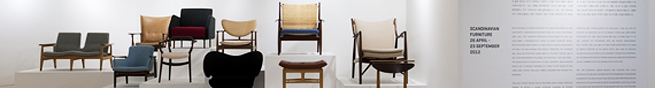

PROGRAM
HOME > PROGRAM > 인턴쉽 자원봉사
인턴쉽 자원봉사
인턴쉽
미술관 관련분야에 종사하기를 희망하는 유능한 인재들에게 전문인력으로서의 실무경험 기회를 제곤하지 위하여 인턴쉽 프로그램을 운영하고 있습니다. 선발된 인턴은 전시, 홍보, 교육 등 희망하는 실습분야 에서 구체적인 업무진행과정에 직접 참여하게 됩니다.
| 모집개요 | - 모집인원: 00명 (이력서는 상시 받으나 적격자는 각 팀 결원시 별도로 연락 드립니다.) - 근무시간: 주5일 (9:00~18:00) - 업무내용: 미술관 전시 및 교육관련 업무 보조 - 응시자격: 미술, 미술교육, 디자인, 사진, 문화예술 관련 전공 학부졸업생 이상 |
|---|---|
| 신청방법 | 본 페이지에 첨부된 지원서 양식 다운로드 후 e-mail접수 daelim.museum@gmail.com |
| 선발방법 | 서류심사 → 면접심사 |
| 합격발표 | 1, 2차 심사 각각 합격자에 한하여 개별통보 |
자원봉사
대림미술관은 매 전시마다 체계적이고 꾸준한 교육을 통한 전문 도슨트 양성을 실행, 이 인력을 바탕으로 미술관 만의 색깔이 가득 담긴 가이드 프로그램을 실행하고 있습니다. 대림미술관 도슨트로 활동하실 자원봉사자들은 활동 후 미술관과 당사자 협의에 따라 교육강사, 인턴활동에도 참여하실 수 있습니다.
| 활동내용 | - 근무시간: 평일(화~일 10:00~18:00) 중 주 8시간 이상 근무 - 업무내용: 전시설명, 전시장 관리, 작품 지킴이 |
|---|---|
| 지원방법 | - 지원자격 : 만 19세 이상, 주 8시간 이상 근무가 가능하신 분 - 본 페이지에 첨부된 지원서 양식 다운로드 후 e-mail접수 daelim.museum@gmail.com |
| 선발방법 | 서류심사 (서류전형 통과자에 한해 14일 내 개별통보. 별도의 인터뷰 없음) |
| 교육일정 | 도슨트 오리엔테이션 및 기본 교육 → Activity 중심의 작품 및 작가 연구 → 개별 학습 → 원고 작성 → 리허설 |
| 활동특전 | 대림미술관 아카데미, 강연회 또는 학술세미나 무료 수강 및 초대권 지급 현장 실습활동 수료 후 자원봉사 확인증 또는 도슨트 교육 수료증 발급 |